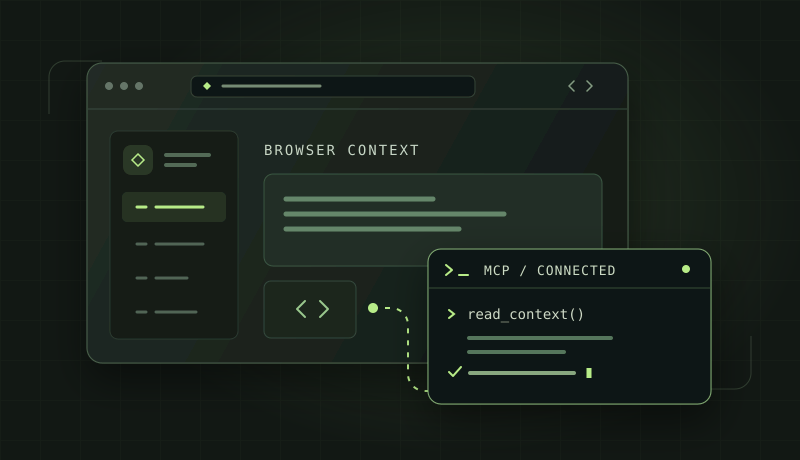
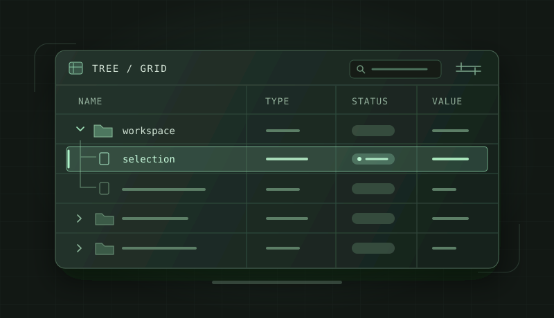
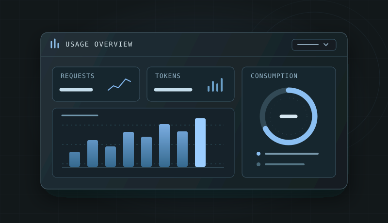
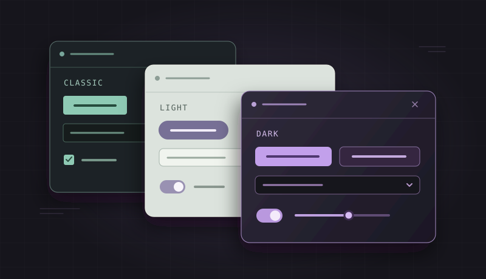
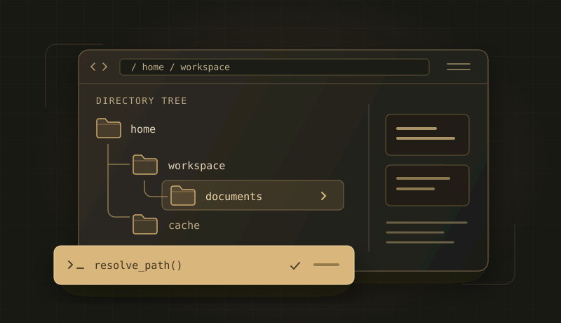
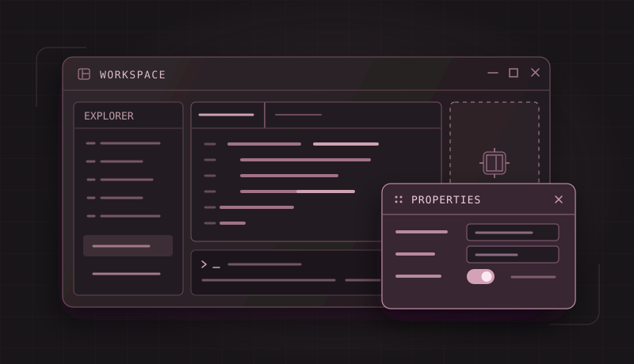

BROWSER × MCPAusgewähltfirefox-codex-mcp
Verbindet Firefox mit Codex und anderen MCP-Clients. Tabs, Fenster und Seiteninhalte direkt aus dem KI-Workflow nutzen.
CODE. NEUGIER. KAFFEE.
Meine Projekte, nützliche Helfer und kleine Experimente.
Gebaut aus Neugier. Geteilt zum Entdecken und Weiterdenken.
01 / AUSGEWÄHLTE REPOS

BROWSER × MCPAusgewähltVerbindet Firefox mit Codex und anderen MCP-Clients. Tabs, Fenster und Seiteninhalte direkt aus dem KI-Workflow nutzen.

GRID × TREEAusgewähltGrid und Tree für Delphi und Lazarus. Ein erweiterbarer Prototyp mit gemeinsamem Datenkern für VCL, FMX und LCL.

USAGE × INSIGHTSAusgewähltOpenAI-API-Kosten, Tokenverbrauch und Codex-Limits im Blick. Ein natives Dashboard für Windows und Android.
02 / KLEIN, ABER NÜTZLICH

AusgewähltStyle-Ressourcen in Delphi-FMX-Styles übersichtlich durchstöbern und vergleichen.

AusgewähltWo gehören Programm- und Nutzerdaten hin? Systempfade unter Windows und Android erkunden.

AusgewähltDocking und MDI in Delphi: Beispiele mit VCL-Bordmitteln, DevExpress und Walibeiro.